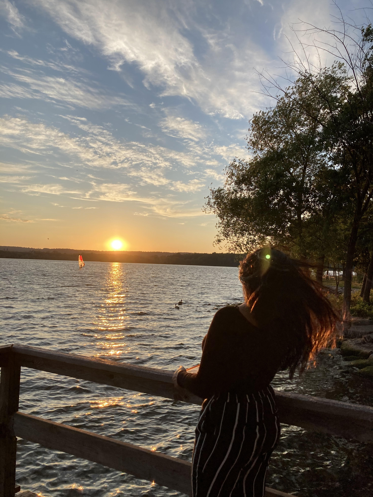

Hey there, looks like you found my website might as well stick around since you're already here. My name is Romssa , I'm 16 years old and attend high school in Canada.This website is about me, my family and more! There are going to be pictures of some of the things/people that mean alot to me/intrest me.
in "about me" youll learn some things about me, what I do in my free time,
what major events have occured and so much more.
under "Assignments" will be the work I have done during this quadmester for ICS3U0, also known as computer science.To be honest I was very nervous and was worried that this course might be very hard, and I wont be able to do it but i've been working hard.So if you want to see my progress through out the quadmester, open assignment!
Under "family" youll learn about the people that mean the most to me and some intressting things about them
